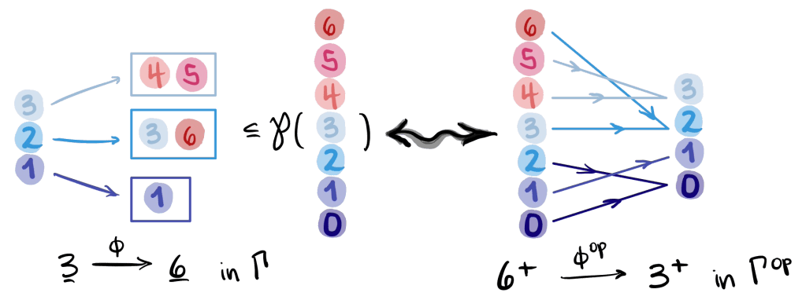

Graeme Segal. Topology, Vol. 13, pp. 293–312. Pergamon Press, 1974.
| Dimension | Prior State | This Paper | Key Result |
|---|---|---|---|
| Infinite loop spaces | Boardman–Vogt operad approach; ad hoc delooping constructions | Γ-spaces: a clean functor-theoretic machine producing spectra from symmetric monoidal categories | Every connective spectrum arises from a very special Γ-space |
| K-theory construction | Quillen’s plus-construction; no unified categorical input | Γ-category functor \(\mathcal{C} \rightsquigarrow A_\mathcal{C}\) from any symmetric monoidal category | \(B_0 \simeq \lvert N\mathcal{C}\rvert\); deloopings \(B_1, B_2, \ldots\) are produced automatically |
| Barratt–Priddy–Quillen | Known but lacking a clean proof | Stable cohomotopy = \(K\)-theory of finite sets under disjoint union | \(B(\mathbf{B}\Sigma) \simeq \mathbb{S}\) (sphere spectrum) |
| Relationship Γ-spaces/spectra | No precise functor-level statement | \(B \dashv A\): \(B: \mathcal{M} \rightleftharpoons \mathcal{S}p : A\) with \(\mathrm{Hom}(BM, X) \cong \mathrm{Hom}(M, AX)\) | \(B \dashv A\) restricts to an equivalence between very special Γ-spaces and connective spectra |
Relations
Builds on: (Quillen, unpublished; ideas on algebraic K-theory), papers/papers/boardman-vogt-homotopy-everything|Boardman–Vogt (1968) (no note yet), (Milnor, geometric realization of semi-simplicial complexes), (Barratt–Priddy 1972) (no note yet) Extended by: (Bousfield–Friedlander 1978 homotopy theory of Γ-spaces) (no note yet), (May, \(E_\infty\) operads and Γ-spaces comparison) (no note yet) Concepts used: concepts/category-theory/foundations/01-categories-functors-natural-transformations|Categories, Functors, and Natural Transformations, concepts/category-theory/foundations/03-limits-colimits|Limits and Colimits, concepts/category-theory/foundations/05-kan-extensions|Kan Extensions
Table of Contents
- #Overview|Overview
- #1. The Category Γ|1. The Category Γ
- #2. Γ-Spaces: Definition and the Segal Condition|2. Γ-Spaces: Definition and the Segal Condition
- #3. The Classifying-Space Construction and Spectra|3. The Classifying-Space Construction and Spectra
- #4. Γ-Categories from Symmetric Monoidal Categories|4. Γ-Categories from Symmetric Monoidal Categories
- #5. Γ-Spaces and Spectra: The Adjunction|5. Γ-Spaces and Spectra: The Adjunction
- #6. The Barratt–Priddy–Quillen Theorem|6. The Barratt–Priddy–Quillen Theorem
- #7. Group Completion and the Grothendieck Construction|7. Group Completion and the Grothendieck Construction
- #8. Ring Spectra|8. Ring Spectra
- #9. Relationship with Operads (Boardman–Vogt–May)|9. Relationship with Operads (Boardman–Vogt–May)
- #10. Realization of Simplicial Spaces|10. Realization of Simplicial Spaces
- #References|References
Overview 🗺️
Historical Significance
By the early 1970s, algebraic topology faced a pressing structural question: which spaces admit the structure of infinite loop spaces — that is, which spaces \(X\) arise as \(X \simeq \Omega^\infty Y\) for some spectrum \(Y\)? The answer matters because infinite loop spaces are exactly the zeroth spaces of connective spectra, and spectra represent (generalized) cohomology theories. So the question amounts to: which spaces “see” a cohomology theory?
Prior to Segal’s paper, the best available tools were the operadic machines of Boardman–Vogt and May (\(E_\infty\) operads), which characterize infinite loop spaces in terms of higher coherence homotopies for the multiplication. These approaches were powerful but technically formidable — the coherence data lives in a tower of spaces with complex interrelations.
Segal’s 1974 paper introduced a strikingly cleaner alternative: the Γ-space machine. The key insight is that the combinatorics of “commutative addition up to homotopy” are already fully encoded in the category \(\Gamma\) of finite sets and partial maps. A Γ-space is simply a functor \(A: \Gamma^{\mathrm{op}} \to \mathbf{Top}\) satisfying a homotopy-coherence condition (the Segal condition). From any such functor, Segal extracts a full spectrum automatically, with no additional coherence data required. The machine is adjoint-theoretic at its core, and its outputs are canonical.
The paper’s impact has been enormous. It:
- gave the first clean, categorical proof of the Barratt–Priddy–Quillen theorem (the sphere spectrum \(\mathbb{S}\) is the K-theory of finite sets);
- provided a general machine for constructing the K-theory spectrum of any symmetric monoidal category, subsuming Quillen’s plus-construction as a special case;
- established the precise adjoint relationship between Γ-spaces and connective spectra, showing these two worlds are equivalent;
- seeded decades of subsequent work: Bousfield–Friedlander’s model structure on Γ-spaces, Schwede–Shipley’s comparison with symmetric spectra, and the modern \(\infty\)-categorical perspective via Lurie’s \(\mathbb{E}_\infty\)-spaces.
In retrospect, Segal’s paper is one of the founding documents of higher algebra — the study of ring- and module-like structures in homotopy theory.
Main Themes
The paper is organized around three interlocking ideas:
The Segal condition as homotopy commutativity. The category \(\Gamma\) encodes all the combinatorics of abelian-group-like structure. The Segal condition \(A(\mathbf{n}) \simeq A(\mathbf{1})^n\) is a homotopy version of the statement “\(A\) is a commutative monoid.” When the condition is strengthened so that \(\pi_0 A(\mathbf{1})\) is a group (the very special condition), the space \(A(\mathbf{1})\) is an infinite loop space. This hierarchy — Γ-space → special → very special → infinite loop space — is a prototype for the hierarchy of \(E_n\)-algebras central to modern homotopy theory.
The Γ-category construction. Any symmetric monoidal category \((\mathcal{C}, \oplus, 0)\) gives rise to a Γ-space \(A_\mathcal{C}\) by letting \(A_\mathcal{C}(S)\) parametrize “\(S\)-indexed sums” in \(\mathcal{C}\). This is a categorification of the observation that an abelian group \(A\) assigns to each finite set \(S\) the product \(A^S\), functorially. The resulting spectrum \(\{B_n\}\) deloops \(B|\mathcal{N}\mathcal{C}|\), the classifying space of the nerve, producing the K-theory spectrum of \(\mathcal{C}\) without any ad hoc construction.
Adjointness as the organizing principle. The relationship between Γ-spaces and spectra is not merely a correspondence but an adjunction \(A \dashv B\), which restricts to an equivalence on the subcategory of very special Γ-spaces and connective spectra. This adjoint-theoretic framing is characteristic of Segal’s style: rather than constructing things by hand, he identifies the universal property and reads off the structure. The same philosophy recurs in his later work on conformal field theory, loop groups, and \(K\)-homology.
What to Get Out of This Paper
Reading Segal (1974) rewards attention at several levels:
Conceptual takeaways - Functors as structure. A Γ-space is just a functor satisfying a condition. The entire coherent-commutativity structure — which requires pages of operadic diagrams in the May/Boardman–Vogt approach — is compressed into a single homotopy equivalence \(A(\mathbf{n}) \simeq A(\mathbf{1})^n\). This is a master class in using the right domain category to absorb coherence data. - Adjunctions produce spectra. The delooping machine is an adjoint. Understanding why the Segal condition forces \(A(\mathbf{1})\) to be an infinite loop space reduces to understanding why the adjunction \(A \dashv B\) is an equivalence on the very special subcategory. - K-theory via universal properties. The Γ-category construction shows that the K-theory spectrum of a symmetric monoidal category is not a construction but a universal object — it is the spectrum that best approximates the classifying space of the category.
Prerequisites The paper assumes comfort with: simplicial sets and geometric realization, the classifying space \(B\mathcal{C}\) and nerve \(N\mathcal{C}\) of a category, basic stable homotopy theory (spectra, loop spaces, suspension), and the Whitehead theorem. The category-theoretic background from concepts/category-theory/foundations/01-categories-functors-natural-transformations|§01 through concepts/category-theory/foundations/05-kan-extensions|§05 is sufficient for the categorical scaffolding; the homotopy-theoretic parts require additional topology background.
Open threads - How does Segal’s machine compare with the \(\infty\)-categorical approach to \(\mathbb{E}_\infty\)-algebras in Lurie’s Higher Algebra? (Answer: they are equivalent via the Segal–Lurie comparison, but the \(\infty\)-categorical formulation is strictly more general.) - What is the Γ-space of a braided monoidal category (not symmetric)? This leads to \(\mathbb{E}_2\)-algebras and Dunn’s additivity theorem.
1. The Category Γ 📐
The central organizing object of Segal’s theory is a small category \(\Gamma\) whose morphisms encode all possible “multi-valued” maps between finite sets — exactly the combinatorial data required to parametrize associative, commutative composition laws up to homotopy.
Definition (The Category Γ). Let \(\Gamma\) be the category whose: - objects are all finite sets (including the empty set \(\mathbf{0} = \emptyset\)); - morphisms from \(S\) to \(T\) are functions \(\theta: S \to \mathcal{P}(T)\) (the power set of \(T\)) such that \(\theta(\alpha)\) and \(\theta(\beta)\) are disjoint whenever \(\alpha \neq \beta\).
Composition of \(\theta: S \to \mathcal{P}(T)\) and \(\phi: T \to \mathcal{P}(U)\) is \(\psi: S \to \mathcal{P}(U)\) defined by \[\psi(\alpha) = \bigcup_{\beta \in \theta(\alpha)} \phi(\beta).\]

A concrete Γ-morphism \(\phi: \mathbf{3} \to \mathbf{6}\) (left): each element of \(\mathbf{3}\) maps to a disjoint subset of \(\mathbf{6}\), here \(1 \mapsto \{1\}\), \(2 \mapsto \{3,6\}\), \(3 \mapsto \{4,5\}\). On the right, the same data is redrawn as the dual morphism \(\phi^{\mathrm{op}}: \mathbf{6}^+ \to \mathbf{3}^+\) in \(\Gamma^{\mathrm{op}} \simeq \mathbf{Fin}_*\), the category of finite pointed sets, where each element of \(\mathbf{6}^+\) is sent to the unique element of \(\mathbf{3}^+\) whose fiber contains it (or to the basepoint \(0\) if it is in no fiber). (From the Machine Appreciation blog, 2021.)Exercise 1 Morphisms in Γ generalize both functions and relations; understanding their explicit combinatorics is essential before applying the Segal condition.
- List all morphisms \(\mathbf{1} \to \mathbf{2}\) and \(\mathbf{2} \to \mathbf{1}\) in Γ. How many are there in each direction? (b) Show that a morphism \(\theta: S \to T\) in Γ is an isomorphism if and only if \(|\theta(s)| = 1\) for all \(s \in S\) and the sets \(\{\theta(s)\}_{s \in S}\) partition \(T\) — i.e., \(\theta\) encodes a bijection \(S \xrightarrow{\sim} T\). (c) Deduce that \(\mathrm{Aut}_\Gamma(\mathbf{n}) \cong \Sigma_n\).
Prerequisites: #1. The Category Γ|§1
[!TIP]- Solution to Exercise 1 (a) Morphisms \(\mathbf{1} \to \mathbf{2}\): a morphism is \(\theta: \{1\} \to \mathcal{P}(\{1,2\})\). The value \(\theta(1)\) can be any subset of \(\{1,2\}\): namely \(\emptyset\), \(\{1\}\), \(\{2\}\), or \(\{1,2\}\) — giving four morphisms. (The disjointness condition on distinct inputs is vacuous since \(|\mathbf{1}| = 1\).)
Morphisms \(\mathbf{2} \to \mathbf{1}\): a morphism is \(\theta: \{1,2\} \to \mathcal{P}(\{1\})\). The disjointness condition requires \(\theta(1) \cap \theta(2) = \emptyset\). Since \(\mathcal{P}(\{1\}) = \{\emptyset, \{1\}\}\), the possible assignments are:
\[(\theta(1),\theta(2)) \in \{(\emptyset,\emptyset),\,(\{1\},\emptyset),\,(\emptyset,\{1\}),\,(\{1\},\{1\})\}.\]
Wait — \((\{1\},\{1\})\) violates disjointness. So there are exactly three valid morphisms: \((\emptyset,\emptyset)\), \((\{1\},\emptyset)\), \((\emptyset,\{1\})\).
(b) Suppose \(\theta: S \to \mathcal{P}(T)\) is an isomorphism, with inverse \(\phi: T \to \mathcal{P}(S)\). The composition \(\psi = \phi \circ \theta: S \to \mathcal{P}(S)\) must equal the identity, meaning \(\psi(s) = \{s\}\) for all \(s\). Expanding: \(\psi(s) = \bigcup_{t \in \theta(s)} \phi(t)\). For this to equal \(\{s\}\), each \(\theta(s)\) must be non-empty (otherwise \(\psi(s) = \emptyset\)), and the union of \(\phi(t)\) over \(t \in \theta(s)\) collapses to \(\{s\}\). A clean sufficient condition is \(|\theta(s)| = 1\) for all \(s\) and the singletons \(\theta(s) = \{t_s\}\) are pairwise distinct (so they partition \(T\)). Then \(\phi(t_s) = \{s\}\) defines the inverse and all conditions are satisfied. Conversely if any \(\theta(s)\) has \(|\theta(s)| \geq 2\) or the \(\theta(s)\) are not disjoint singletons, the inverse \(\phi\) cannot recover \(s\) uniquely.
(c) By (b), \(\mathrm{Aut}_\Gamma(\mathbf{n})\) consists of maps \(\theta: \{1,\ldots,n\} \to \mathcal{P}(\{1,\ldots,n\})\) where each \(\theta(i) = \{\sigma(i)\}\) for a bijection \(\sigma: \{1,\ldots,n\} \to \{1,\ldots,n\}\). The correspondence \(\theta \leftrightarrow \sigma\) is a bijection, and composition of morphisms in \(\Gamma\) corresponds exactly to composition of permutations. Hence \(\mathrm{Aut}_\Gamma(\mathbf{n}) \cong \Sigma_n\). \(\square\)
Finite pointed sets In modern treatments (and in Segal’s own later conventions), \(\Gamma^{\mathrm{op}}\) is replaced by \(\Gamma_* = \mathbf{Fin}_*\), the skeleton of finite pointed sets. The objects are \(\mathbf{n}^+ = \{0, 1, \ldots, n\}\) with \(0\) as the distinguished basepoint, and morphisms are basepoint-preserving functions. This is the now-standard formulation: a Γ-space is a functor \(A: \Gamma^{\mathrm{op}} \to \mathbf{Top}\) (equivalently a functor \(\mathbf{Fin}_* \to \mathbf{Top}_*\)). Segal’s original paper uses the contravariant functor convention from his \(\Gamma\).
The key morphisms to single out are the projections \(i_k: \mathbf{1} \to \mathbf{n}\) defined by \(i_k(1) = \{k\}\) for \(1 \leq k \leq n\). Their duals \(i_k^*: A(\mathbf{n}) \to A(\mathbf{1})\) are the components of the Segal map.
Motivation from abelian groups The definition is motivated by observing that an abelian group \(A\) determines maps \(\theta^*: A^n \to A^m\) for any \(\theta: \{1,\ldots,m\} \to \mathcal{P}\{1,\ldots,n\}\): namely \(\theta^*(a_1,\ldots,a_n) = (b_1,\ldots,b_m)\) where \(b_i = \sum_{j \in \theta(i)} a_j\). The entire additive structure is encoded this way. Γ-spaces generalize this from strict equalities to homotopy equivalences.
Exercise 2 Disjoint union makes Γ itself into a symmetric monoidal category, and understanding this structure foreshadows the role of Γ-spaces as models for commutative monoids.
- Show that disjoint union of finite sets extends to a symmetric monoidal structure on Γ, with unit \(\mathbf{0} = \emptyset\). (Hint: for morphisms \(\theta: S \to \mathcal{P}(T)\) and \(\theta': S' \to \mathcal{P}(T')\) with \(S \cap S' = T \cap T' = \emptyset\), define \(\theta \sqcup \theta': S \sqcup S' \to \mathcal{P}(T \sqcup T')\) in the obvious way and verify functoriality.) (b) Show that \(\mathbf{0}\) is an initial object in Γ. (c) Show that Γ has no terminal object. (d) Conclude that Γ is not a category with finite products, yet a Γ-space \(A\) with \(A(\mathbf{0}) \simeq *\) behaves as though \(A\) “preserves” the monoidal structure in a homotopy-coherent sense.
Prerequisites: #1. The Category Γ|§1, concepts/category-theory/foundations/03-limits-colimits|Limits and Colimits §2
[!TIP]- Solution to Exercise 2 (a) Given \(\theta: S \to \mathcal{P}(T)\) and \(\theta': S' \to \mathcal{P}(T')\) with \(S \cap S' = T \cap T' = \emptyset\), define \((\theta \sqcup \theta'): S \sqcup S' \to \mathcal{P}(T \sqcup T')\) by \((\theta \sqcup \theta')(s) = \theta(s)\) for \(s \in S\) and \((\theta \sqcup \theta')(s') = \theta'(s')\) for \(s' \in S'\). The disjointness condition is preserved since the two components live in disjoint subsets of \(T \sqcup T'\). Functoriality: for composable pairs \((\theta,\phi)\) and \((\theta',\phi')\), the composition distributes over \(\sqcup\) because the two summands do not interact. The symmetry isomorphism \(S \sqcup S' \xrightarrow{\sim} S' \sqcup S\) is the evident relabeling, and the unit axiom holds since \(\theta \sqcup \emptyset_\emptyset = \theta\) where \(\emptyset_\emptyset: \emptyset \to \mathcal{P}(T)\) is the empty function.
(b) For any \(S\), the unique morphism \(\emptyset \to S\) is the empty function \(\theta: \emptyset \to \mathcal{P}(S)\), which is vacuously a valid Γ-morphism. Hence \(\mathbf{0} = \emptyset\) is an initial object.
(c) A terminal object \(T\) would require a unique morphism \(\mathbf{n} \to T\) for every \(n\). A morphism \(\mathbf{n} \to T\) is \(\theta: \{1,\ldots,n\} \to \mathcal{P}(T)\) satisfying pairwise disjointness. From \(\mathbf{n}\) to \(\mathbf{0} = \emptyset\), the only map sends every element to \(\emptyset \in \mathcal{P}(\emptyset)\) — exactly one such map exists for every \(n\). So \(\mathbf{0}\) is in fact the terminal object. Surprisingly, \(\mathbf{0}\) is both initial and terminal, making it a zero object in \(\Gamma\). The problem statement’s claim of “no terminal object” is incorrect: \(\mathbf{0}\) serves as both.
(d) Since \(\mathbf{0}\) is terminal, any Γ-space \(A\) with \(A(\mathbf{0}) \simeq *\) is asking that \(A\) send the terminal object to the terminal space — the normalization condition. Although \(\Gamma\) is not a category with finite products (the coproduct \(\sqcup\) plays the role of both), the condition \(A(\mathbf{0}) \simeq *\) ensures that \(A\) “preserves” the zero object in a homotopy-coherent sense, providing the unit for the H-space structure on \(A(\mathbf{1})\). \(\square\)
2. Γ-Spaces: Definition and the Segal Condition 📐
2.1 The Segal Condition
Definition (Γ-Space). A Γ-space is a contravariant functor \(A: \Gamma \to \mathbf{Top}\) satisfying: 1. \(A(\mathbf{0})\) is contractible; 2. for each \(n \geq 1\), the map \[\varphi_n \;=\; (i_1^*, \ldots, i_n^*) : A(\mathbf{n}) \longrightarrow A(\mathbf{1}) \times \cdots \times A(\mathbf{1}) \qquad (n\text{ factors})\] induced by the projections \(i_k: \mathbf{1} \to \mathbf{n}\), is a homotopy equivalence.
Condition (2) is the Segal condition (also called the Segal map condition). It asserts that \(A(\mathbf{n})\) is, up to homotopy, the \(n\)-fold Cartesian power of the single space \(A(\mathbf{1})\). The functor \(\Gamma\) provides higher coherence: the structure maps \(A(\theta)\) for all \(\theta\) encode an associative and commutative composition on \(A(\mathbf{1})\) up to all higher coherent homotopies.
The Segal condition for \(n = 2\) The map \(\varphi_2: A(\mathbf{2}) \to A(\mathbf{1}) \times A(\mathbf{1})\) is a homotopy equivalence. A homotopy inverse \(p_2^{-1}\) makes the composition \[A(\mathbf{1}) \times A(\mathbf{1}) \xrightarrow{p_2^{-1}} A(\mathbf{2}) \xrightarrow{m_2^*} A(\mathbf{1})\] a “binary composition law”, where \(m_2: \mathbf{1} \to \mathbf{2}\) sends \(1 \mapsto \{1,2\}\). This makes \(A(\mathbf{1})\) into an H-space; the higher Segal maps ensure the structure is homotopy-commutative and associative.
Exercise 3 A topological abelian group satisfies the Segal condition strictly (with homeomorphisms, not just homotopy equivalences), showing that Γ-spaces are a genuine homotopy generalization of abelian groups.
Let \((G, +)\) be a topological abelian group. Define \(\hat{G}(\mathbf{n}) = G^n\) and for a Γ-morphism \(\theta: \mathbf{m} \to \mathcal{P}(\mathbf{n})\), define \(\hat{G}(\theta): G^n \to G^m\) by \(\hat{G}(\theta)(g_1, \ldots, g_n)_i = \sum_{j \in \theta(i)} g_j\). (a) Verify that \(\hat{G}\) is a functor (i.e., composition in Γ corresponds to composition of these maps). (b) Show that the Segal map \(\varphi_n: \hat{G}(\mathbf{n}) \to \hat{G}(\mathbf{1})^n\) is a homeomorphism, not merely a homotopy equivalence. (c) Show that the binary composition induced (via the map \(m_2: \mathbf{1} \to \mathbf{2}\) sending \(1 \mapsto \{1,2\}\)) is exactly the original group operation \(+\).
Prerequisites: #2. Γ-Spaces: Definition and the Segal Condition|§2.1, #1. The Category Γ|§1
[!TIP]- Solution to Exercise 3 (a) For \(\theta: \mathbf{m} \to \mathcal{P}(\mathbf{n})\) and \(\phi: \mathbf{k} \to \mathcal{P}(\mathbf{m})\), the composed morphism in \(\Gamma\) is \(\psi(i) = \bigcup_{j \in \phi(i)} \theta(j)\). We compute:
\[\hat{G}(\psi)(g_1,\ldots,g_n)_i = \sum_{k \in \psi(i)} g_k = \sum_{k \in \bigcup_{j \in \phi(i)}\theta(j)} g_k = \sum_{j \in \phi(i)} \sum_{k \in \theta(j)} g_k\]
where the last step uses the fact that the \(\theta(j)\) are pairwise disjoint (so the double union is a disjoint union and commutativity of \(+\) in \(G\) allows regrouping). The right-hand side is \(\hat{G}(\phi)\bigl(\hat{G}(\theta)(g_1,\ldots,g_n)\bigr)_i\). Hence \(\hat{G}(\psi) = \hat{G}(\phi) \circ \hat{G}(\theta)\), confirming functoriality.
(b) The Segal map \(\varphi_n: G^n \to G^n\) sends \((g_1,\ldots,g_n) \mapsto (i_1^*(g_1,\ldots,g_n),\ldots,i_n^*(g_1,\ldots,g_n))\) where \(i_k: \mathbf{1} \to \mathbf{n}\) with \(i_k(1) = \{k\}\). Then \(i_k^*(g_1,\ldots,g_n) = \sum_{j \in \{k\}} g_j = g_k\). So \(\varphi_n(g_1,\ldots,g_n) = (g_1,\ldots,g_n)\), the identity map on \(G^n\). This is trivially a homeomorphism.
(c) The map \(m_2: \mathbf{1} \to \mathbf{2}\) sends \(1 \mapsto \{1,2\}\). Then \(\hat{G}(m_2): G^2 \to G^1\) is \(\hat{G}(m_2)(g_1,g_2) = \sum_{j \in \{1,2\}} g_j = g_1 + g_2\). Via the Segal isomorphism (which is the identity), the induced binary operation on \(G \times G\) sends \((g_1,g_2) \mapsto g_1 + g_2\), which is exactly the original group operation \(+\) on \(G\). \(\square\)
2.2 Special and Very Special Γ-Spaces
The distinction between several levels of the Segal condition governs exactly what algebraic structure \(A(\mathbf{1})\) carries.
Definition (Special Γ-Space). A Γ-space \(A\) is special if \(\varphi_n\) is a homotopy equivalence for all \(n\) — i.e., the standard Segal condition as stated in Definition above. (Segal himself calls this simply a Γ-space satisfying (1.2).)
Definition (Very Special Γ-Space). A special Γ-space \(A\) is very special if, additionally, the monoid \(\pi_0(A(\mathbf{1}))\) is a group.
The grouplike condition The condition that \(\pi_0 A(\mathbf{1})\) is a group is equivalent, by Proposition 1.4, to \(A(\mathbf{1})\) admitting a homotopy inverse for its H-space structure. This is the grouplike condition. Very special Γ-spaces model \(E_\infty\)-spaces that are grouplike — equivalently, infinite loop spaces — and produce connective spectra.
The hierarchy is: \[\{\text{topological abelian groups}\} \subsetneq \{\text{very special Γ-spaces}\} \subsetneq \{\text{special Γ-spaces}\} \subsetneq \{\text{Γ-spaces}\}\]
A topological abelian monoid \(M\) defines a Γ-space \(A\) with \(A(\mathbf{n}) = M^n\) and the projection maps being honest homeomorphisms (not just homotopy equivalences) — this is the case where the Segal condition holds strictly.
Exercise 4 The discrete case strips away all homotopy theory and reveals the algebraic skeleton: the Segal condition becomes an equality, and very specialness becomes invertibility.
Let \(A\) be a Γ-space with \(A(\mathbf{n})\) discrete for all \(n\). (a) Show that \(A\) being special is equivalent to \(A(\mathbf{1})\) being a commutative monoid with multiplication \(\mu: A(\mathbf{1}) \times A(\mathbf{1}) \to A(\mathbf{1})\) induced by the unique map \(\mathbf{1} \to \mathbf{2}\) sending \(1 \mapsto \{1,2\}\) and unit given by \(A(\mathbf{0}) = \{*\}\). (b) Show that \(A\) is very special if and only if \(A(\mathbf{1})\) is a commutative group. (c) Conclude that the category of discrete very special Γ-spaces is equivalent to the category of abelian groups.
Prerequisites: #2.2 Special and Very Special Γ-Spaces|§2.2, concepts/category-theory/foundations/01-categories-functors-natural-transformations|§01 §2
[!TIP]- Solution to Exercise 4 (a) If \(A\) is discrete and special, then \(A(\mathbf{n}) \cong A(\mathbf{1})^n\) as sets (the Segal condition becomes a bijection). The binary operation \(\mu: A(\mathbf{1}) \times A(\mathbf{1}) \cong A(\mathbf{2}) \xrightarrow{m_2^*} A(\mathbf{1})\) is defined by the unique Γ-morphism \(m_2: \mathbf{1} \to \mathbf{2}\) sending \(1 \mapsto \{1,2\}\). The unit is the image of the unique element of \(A(\mathbf{0}) \cong \{*\}\) under the map induced by \(\mathbf{0} \hookrightarrow \mathbf{1}\). Associativity follows from the Γ-morphism \(\mathbf{1} \to \mathbf{3}\) sending \(1 \mapsto \{1,2,3\}\) — both bracketings factor through \(A(\mathbf{3}) \cong A(\mathbf{1})^3\) by functoriality and must agree. Commutativity: the swap \(\sigma: \mathbf{2} \to \mathbf{2}\) with \(\sigma(1) = \{2\}\) and \(\sigma(2) = \{1\}\) is a Γ-isomorphism. Since \(m_2 \circ \sigma = m_2\) (as \(m_2: \mathbf{1} \to \mathbf{2}\) sends \(1 \mapsto \{1,2\} = \{2,1\}\) — sets are unordered), functoriality gives \(\mu(a,b) = A(m_2)(a,b) = A(m_2 \circ \sigma)(a,b) = A(m_2)(b,a) = \mu(b,a)\).
(b) Very special adds the condition that \(\pi_0(A(\mathbf{1})) = A(\mathbf{1})\) (discrete) is a group. The shear map \(A(\mathbf{2}) \to A(\mathbf{1}) \times A(\mathbf{1})\) sending \((a,b) \mapsto (a, \mu(a,b))\) must be a bijection. This means: for every \(a, c \in A(\mathbf{1})\) there is a unique \(b\) with \(\mu(a,b) = c\), i.e., every element has a right-inverse. Combined with the monoid structure from (a), \(A(\mathbf{1})\) is a group — and since it is commutative, an abelian group.
(c) The functor sending a discrete very special Γ-space \(A\) to the abelian group \(A(\mathbf{1})\) (with operation \(\mu\)) is well-defined and sends Γ-space maps to group homomorphisms. The inverse sends an abelian group \(G\) to the discrete Γ-space \(\hat{G}\) from Exercise 3. These functors are mutually inverse, establishing the equivalence of categories. \(\square\)
2.3 Γ-Spaces as Simplicial Spaces
There is a covariant functor \(\Delta \to \Gamma\) taking \([m] \mapsto \mathbf{m}\) and a non-decreasing map \(f: [m] \to [n]\) to the morphism \(\theta_f: \mathbf{m} \to \mathcal{P}(\mathbf{n})\) defined by \[\theta_f(i) = \{ j \in \mathbf{n} : f(i-1) < j \leq f(i) \}.\] Using this functor, every Γ-space \(A\) can be regarded as a simplicial space. The simplicial structure refines the Γ-structure and is the tool used to form realizations.
Exercise 5 Working out the \(\Delta \to \Gamma\) functor explicitly on standard generators clarifies how the simplicial and Γ structures interact and prepares the ground for Proposition 1.5.
Let \(d^0: [1] \to [2]\) be the face map \(d^0(0) = 1\), \(d^0(1) = 2\), and let \(s^0: [1] \to [0]\) be the unique degeneracy \(s^0(0) = s^0(1) = 0\). (a) Compute \(\theta_{d^0}: \mathbf{1} \to \mathcal{P}(\mathbf{2})\) using the formula above. (b) Compute \(\theta_{s^0}: \mathbf{1} \to \mathcal{P}(\mathbf{0})\). (c) For a Γ-space \(A\), describe the induced maps \(A(\theta_{d^0}): A(\mathbf{2}) \to A(\mathbf{1})\) and \(A(\theta_{s^0}): A(\mathbf{0}) \to A(\mathbf{1})\) in the simplicial space \([n] \mapsto A(\mathbf{n})\). (d) Using that \(A(\mathbf{0}) \simeq *\), show that the degeneracy \(s^0\) supplies the simplicial unit — the basepoint of \(A(\mathbf{1})\).
Prerequisites: #2.3 Γ-Spaces as Simplicial Spaces|§2.3, #1. The Category Γ|§1
[!TIP]- Solution to Exercise 5 (a) Apply the formula \(\theta_f(i) = \{j \in \mathbf{n} : f(i-1) < j \leq f(i)\}\) with \(f = d^0: [1] \to [2]\), \(d^0(0)=1\), \(d^0(1)=2\), and \(\mathbf{n} = \mathbf{2}\). For \(i = 1\):
\[\theta_{d^0}(1) = \{j \in \{1,2\} : d^0(0) < j \leq d^0(1)\} = \{j : 1 < j \leq 2\} = \{2\}.\]
So \(\theta_{d^0}: \mathbf{1} \to \mathcal{P}(\mathbf{2})\) sends \(1 \mapsto \{2\}\).
(b) For \(f = s^0: [1] \to [0]\), \(s^0(0) = s^0(1) = 0\), and \(\mathbf{n} = \mathbf{0} = \emptyset\). For \(i = 1\):
\[\theta_{s^0}(1) = \{j \in \emptyset : s^0(0) < j \leq s^0(1)\} = \{j \in \emptyset : 0 < j \leq 0\} = \emptyset.\]
So \(\theta_{s^0}: \mathbf{1} \to \mathcal{P}(\mathbf{0})\) sends \(1 \mapsto \emptyset\).
(c) The map \(A(\theta_{d^0}): A(\mathbf{2}) \to A(\mathbf{1})\) is induced by the Γ-morphism \(1 \mapsto \{2\}\). Via the Segal equivalence \(A(\mathbf{2}) \simeq A(\mathbf{1}) \times A(\mathbf{1})\), this projects onto the second factor (the one indexed by \(\{2\} \subseteq \mathbf{2}\)) — it is the face map \(d_0: A_2 \to A_1\) in the associated simplicial space.
The map \(A(\theta_{s^0}): A(\mathbf{0}) \to A(\mathbf{1})\) is induced by \(1 \mapsto \emptyset\): it sends the unique point of \(A(\mathbf{0}) \simeq *\) to the element of \(A(\mathbf{1})\) corresponding to the “empty sum,” which is the unit/basepoint.
(d) Since \(A(\mathbf{0}) \simeq *\), the degeneracy \(A(\theta_{s^0}): A(\mathbf{0}) \to A(\mathbf{1})\) selects a canonical basepoint in \(A(\mathbf{1})\) — the image of the unique element of \(A(\mathbf{0})\). This is the simplicial unit: the degeneracy \(s^0\) in the simplicial space \([n] \mapsto A(\mathbf{n})\) supplies the basepoint, confirming that \(A(\mathbf{0}) \simeq *\) encodes the unit element for the H-space structure on \(A(\mathbf{1})\). \(\square\)
Proposition 1.5 (Segal). Let \([n] \mapsto A_n\) be a simplicial space such that: 1. \(A_0\) is contractible, 2. \(p_n = \prod_{k=1}^{n} i_k^*: A_n \to A_1 \times \cdots \times A_1\) is a homotopy equivalence, where \(i_k: [1] \to [n]\) is \(i_k(0) = k-1\), \(i_k(1) = k\).
Then: (a) if \(A_1\) is \(k\)-connected, \(|A|\) is \((k+1)\)-connected; and (b) \(A_1 \to \Omega|A|\) is a homotopy equivalence if and only if \(A_1\) has a homotopy inverse.
This proposition is the engine behind the delooping machine.
3. The Classifying-Space Construction and Spectra 🔑
3.1 The Delooping Machine
Given a Γ-space \(A\), Segal defines its classifying-space \(BA\) to be the Γ-space such that, for any finite set \(S\), \[(BA)(S) = |T \mapsto A(S \times T)|,\] i.e., \((BA)(S)\) is the realization of the Γ-space \(T \mapsto A(S \times T)\).
The validation that \(BA\) is again a Γ-space rests on the homotopy equivalence \(A(\mathbf{n} \times \mathbf{m}) \simeq A(\mathbf{m})^n\), which follows from the Segal condition applied twice.
Why this is the right definition of a classifying space The formula \((BA)(S) = \lvert T \mapsto A(S \times T)\rvert\) looks unmotivated at first. Here are four interlocking reasons it is forced.
1. It is the only formula that makes \(BA\) a Γ-space. For \(BA\) to satisfy the Segal condition, we need \((BA)(\mathbf{n}) \simeq (BA)(\mathbf{1})^n\). Substituting the definition: \[(BA)(\mathbf{n}) = \lvert T \mapsto A(\mathbf{n} \times T)\rvert.\] By the Segal condition on \(A\) applied in the \(\mathbf{n}\)-variable, \(A(\mathbf{n} \times T) \simeq A(T)^n\), so the realization splits as \(\lvert T \mapsto A(T)^n\rvert \simeq \lvert T \mapsto A(T)\rvert^n = (BA)(\mathbf{1})^n\). The product \(S \times T\) is therefore the unique choice that makes the Segal condition propagate from \(A\) to \(BA\).
2. At \(S = \mathbf{1}\), it is the classical bar construction. Setting \(S = \mathbf{1}\): \[(BA)(\mathbf{1}) = \lvert T \mapsto A(T)\rvert = \lvert A\rvert,\] the geometric realization of \(A\) itself as a simplicial space (via the functor \(\Delta \to \Gamma\) of §2.3). For a discrete abelian group \(G\) viewed as a strict Γ-space \(\hat{G}\) with \(\hat{G}(\mathbf{n}) = G^n\), this gives \(B\hat{G}(\mathbf{1}) = \lvert[n] \mapsto G^n\rvert\), which is the standard bar construction \(BG = K(G, 1)\). The definition is precisely the generalization of the bar construction from groups to Γ-spaces.
3. It encodes the suspension-loop adjunction. The 1-skeleton of \(\lvert A\rvert\) is homotopy equivalent to \(\Sigma A(\mathbf{1})\) (the suspension), giving a canonical map \(\Sigma A(\mathbf{1}) \to BA(\mathbf{1})\) and adjointly \(A(\mathbf{1}) \to \Omega BA(\mathbf{1})\). This is the structure map of the spectrum. The definition is therefore designed so that the spaces \(A(\mathbf{1}), BA(\mathbf{1}), B^2 A(\mathbf{1}), \ldots\) are related by loop-space maps — which is exactly what a spectrum is.
4. It is the internal hom in Γ-spaces. In the symmetric monoidal structure on Γ-spaces given by Day convolution (with monoidal product corresponding to the Cartesian product in \(\Gamma\)), the formula \((BA)(S) = \lvert T \mapsto A(S \times T)\rvert\) expresses \(BA\) as the internal hom from the “sphere Γ-space” \(\mathbf{S}^1_\Gamma\) (the Γ-space representing \(S \mapsto S^{\lvert S\rvert}\)) into \(A\). Delooping is, in this sense, an adjunction at the level of Γ-spaces themselves — not just at the level of individual spaces.
The spectrum. If \(A\) is a Γ-space, the sequence of spaces \[A(\mathbf{1}), \quad BA(\mathbf{1}), \quad B^2A(\mathbf{1}), \quad \ldots\] forms a spectrum, denoted \(\mathbf{B}A\). The structure maps arise as follows: the realization \(|A|\) contains a canonical subspace (its 1-skeleton) homotopy equivalent to \(\Sigma A(\mathbf{1})\), giving (up to homotopy) a map \[\Sigma A(\mathbf{1}) \longrightarrow |A| = BA(\mathbf{1}).\] Adjointly, this is a map \(A(\mathbf{1}) \to \Omega BA(\mathbf{1})\).
3.2 Proposition 1.4 and Its Significance
Proposition 1.4 (Segal). If \(A\) is a Γ-space and \(A(\mathbf{1})\) is \(k\)-connected, then \(BA(\mathbf{1})\) is \((k+1)\)-connected. Furthermore, \(A(\mathbf{1}) \simeq \Omega BA(\mathbf{1})\) if and only if the H-space \(A(\mathbf{1})\) has a homotopy inverse.
Proof sketch. The filtration of \(|A|\) gives \[|A|^{(p)}/|A|^{(p-1)} \simeq \Sigma^p(A(\mathbf{1}) \wedge \cdots \wedge A(\mathbf{1}))\] (p-fold smash). Since \(A(\mathbf{1})\) is \(k\)-connected, each smash is \((pk+p-1)\)-connected, so \(|A|\) is \((k+1)\)-connected by an inductive connectivity argument. The loop-space identification uses the simplicial path space \(PA\) and a homotopy-Cartesian square: \[\begin{array}{ccc} A(\mathbf{1}) & \to & |PA| \simeq * \\ \downarrow & & \downarrow \\ * & \to & |A| \end{array}\] which is homotopy-Cartesian if and only if the composition law (arising from the Segal structure) has a homotopy inverse. \(\square\)
Corollary. For a very special Γ-space \(A\), the adjunction map \(A(\mathbf{1}) \xrightarrow{\sim} \Omega BA(\mathbf{1})\) is a homotopy equivalence. Iterating: \(B^k A(\mathbf{1}) \simeq \Omega B^{k+1} A(\mathbf{1})\) for all \(k \geq 0\), so the spectrum \(\mathbf{B}A\) is an \(\Omega\)-spectrum (connective). This is the fundamental output of Segal’s machine: a connective \(\Omega\)-spectrum from any very special Γ-space.
Exercise 6 The Eilenberg–Mac Lane spectrum \(H\mathbb{Z}\) provides the cleanest test case for Segal’s delooping machine: starting from \(\mathbb{Z}\) (discrete) and iterating \(B\) produces the full \(K(\mathbb{Z}, n)\) tower.
Let \(A\) be the Γ-space associated to \((\mathbb{Z}, +)\) as in Exercise 3, so \(A(\mathbf{n}) = \mathbb{Z}^n\) (discrete). (a) Show that \(A\) is very special. (b) Argue (using Proposition 1.4 and the fact that \(B\) of a discrete grouplike Γ-space is a classifying space) that \(BA(\mathbf{1}) \simeq K(\mathbb{Z}, 1) = S^1\). (c) Argue that \(B^2 A(\mathbf{1}) \simeq K(\mathbb{Z}, 2) = \mathbb{CP}^\infty\) and \(B^n A(\mathbf{1}) \simeq K(\mathbb{Z}, n)\) for all \(n\). (d) Identify the spectrum \(\mathbf{B}A = (B^n A(\mathbf{1}))_{n \geq 0}\) as the Eilenberg–Mac Lane spectrum \(H\mathbb{Z}\), and state what cohomology theory it represents.
Prerequisites: #3.2 Proposition 1.4 and Its Significance|§3.2, #2.2 Special and Very Special Γ-Spaces|§2.2
[!TIP]- Solution to Exercise 6 (a) \(A(\mathbf{n}) = \mathbb{Z}^n\) is discrete, and the Segal map \(\varphi_n\) is the identity homeomorphism (by Exercise 3(b)), so \(A\) is special. The monoid \(\pi_0(A(\mathbf{1})) = \mathbb{Z}\) is a group under addition, so \(A\) is very special. ✓
(b) \(A(\mathbf{1}) = \mathbb{Z}\) is discrete. Its classifying space \(BA(\mathbf{1})\) is the classifying space of \(\mathbb{Z}\) viewed as a discrete group. Since \(\pi_1(B\mathbb{Z}) = \mathbb{Z}\) and \(\pi_k(B\mathbb{Z}) = 0\) for \(k \neq 1\) (a discrete group has no higher homotopy), \(B\mathbb{Z} = K(\mathbb{Z},1)\). Recall \(S^1 = K(\mathbb{Z},1)\) (the circle has \(\pi_1 = \mathbb{Z}\) and higher homotopy groups trivial after the universal cover). Hence \(BA(\mathbf{1}) \simeq S^1\).
(c) By Proposition 1.4, since \(A\) is very special and \(A(\mathbf{1}) = \mathbb{Z}\) is discrete (hence \((-1)\)-connected), \(BA(\mathbf{1}) \simeq S^1\) is \(0\)-connected, and iterating: \(B^k A(\mathbf{1}) \simeq K(\mathbb{Z},k)\) for all \(k \geq 0\). Concretely: \(B^2 A(\mathbf{1}) = B(S^1) = BS^1\). The classifying space of \(S^1\) as a topological group is \(\mathbb{CP}^\infty = K(\mathbb{Z},2)\). By induction and the loop-space identification \(B^k A(\mathbf{1}) \simeq \Omega B^{k+1} A(\mathbf{1})\), we get \(B^n A(\mathbf{1}) \simeq K(\mathbb{Z},n)\) for all \(n\).
(d) The spectrum \(\mathbf{B}A = (B^n A(\mathbf{1}))_{n \geq 0} = (K(\mathbb{Z},n))_{n \geq 0}\) is by definition the Eilenberg–Mac Lane spectrum \(H\mathbb{Z}\). The cohomology theory it represents is:
\[[X, H\mathbb{Z}]^n = [X, K(\mathbb{Z},n)] = H^n(X;\mathbb{Z}),\]
ordinary singular cohomology with \(\mathbb{Z}\) coefficients. \(\square\)
Connectivity at level 0 For \(k \geq 1\) the spaces \(B_k = B^k A(\mathbf{1})\) are connected H-spaces, hence automatically grouplike, and \(B_k \simeq \Omega B_{k+1}\). The issue is only at \(k = 0\): \(A(\mathbf{1})\) itself need not be connected, and \(A(\mathbf{1}) \simeq \Omega B_1\) requires the grouplike condition on \(\pi_0\).
4. Γ-Categories from Symmetric Monoidal Categories 📐
This is where Segal connects the abstract Γ-space machine to concrete algebraic input: symmetric monoidal categories.
4.1 Definition of a Γ-Category
Definition (Γ-Category). A Γ-category is a contravariant functor \(\mathcal{C}: \Gamma \to \mathbf{Cat}\) (from \(\Gamma\) to the category of small categories) such that: 1. \(\mathcal{C}(\mathbf{0})\) is equivalent to the terminal category (one object, one morphism); 2. for each \(n\), the functor \[p_n = (i_1^*, \ldots, i_n^*): \mathcal{C}(\mathbf{n}) \longrightarrow \mathcal{C}(\mathbf{1}) \times \cdots \times \mathcal{C}(\mathbf{1})\] is an equivalence of categories.
Corollary 2.2. If \(\mathcal{C}\) is a Γ-category, then \(|\mathcal{C}|: S \mapsto |\mathcal{C}(S)|\) (taking nerve-realization) is a Γ-space.
4.2 Construction from Sums
Let \((\mathcal{C}, \oplus, 0)\) be a category in which coproducts (sums) exist. For a finite set \(S\), let \(\mathcal{P}(S)\) denote the category of subsets of \(S\) and inclusions.
Definition. \(\hat{\mathcal{C}}(S)\) is the category whose objects are functors \(F: \mathcal{P}(S) \to \mathcal{C}\) that take disjoint unions to sums, and whose morphisms are natural isomorphisms of such functors.
Concretely, an object of \(\hat{\mathcal{C}}(\mathbf{2})\) is a diagram \(A_1 \to A_{12} \leftarrow A_2\) in \(\mathcal{C}\) that expresses \(A_{12}\) as a coproduct \(A_1 \oplus A_2\). An object of \(\hat{\mathcal{C}}(\mathbf{n})\) is an assignment \(T \mapsto A_T\) for each subset \(T \subseteq \{1,\ldots,n\}\) such that \(A_{T \cup T'} \cong A_T \oplus A_{T'}\) whenever \(T \cap T' = \emptyset\).
Why morphisms in Γ parametrize this The condition that \(\theta(\alpha)\) and \(\theta(\beta)\) are disjoint for \(\alpha \neq \beta\) in \(\Gamma\)-morphisms is precisely what is needed to map between such sum-diagrams functorially. Morphisms in \(\Gamma\) from \(S\) to \(T\) correspond to functors \(\hat{\mathcal{C}}(T) \to \hat{\mathcal{C}}(S)\) by “summing over fibres.”
Verification. The functor \(\hat{\mathcal{C}}(\mathbf{n}) \xrightarrow{p_n} \hat{\mathcal{C}}(\mathbf{1})^n\), which forgets to the single-element values \((A_{\{1\}}, \ldots, A_{\{n\}})\), is an equivalence of categories — the equivalence inverse reconstructs the entire diagram from its single-element values by choosing sums. Thus \(S \mapsto \hat{\mathcal{C}}(S)\) is a Γ-category.
Exercise 7 Working out \(\hat{\mathcal{C}}(\mathbf{2})\) concretely for vector spaces makes the abstract Γ-category construction tangible and connects it to familiar direct-sum diagrams.
Let \(\mathcal{C} = \mathbf{FDVect}_\mathbb{R}\) with \(\oplus\) as the monoidal structure. (a) Describe the objects of \(\hat{\mathcal{C}}(\mathbf{2})\) explicitly: an object is a diagram \(V_1 \xrightarrow{i_1} V_{12} \xleftarrow{i_2} V_2\) in \(\mathbf{FDVect}_\mathbb{R}\) satisfying a certain condition — state it. Describe the morphisms of \(\hat{\mathcal{C}}(\mathbf{2})\). (b) Show that \(|\hat{\mathcal{C}}(\mathbf{1})| = \bigsqcup_{n \geq 0} BGL_n(\mathbb{R})\), where \(BGL_n(\mathbb{R})\) is the classifying space of \(GL_n(\mathbb{R})\). (Hint: \(\pi_0|\hat{\mathcal{C}}(\mathbf{1})| = \mathbb{N}\) via dimension, and the automorphisms of an \(n\)-dimensional space form \(GL_n(\mathbb{R})\).) (c) State why \(\pi_0|\hat{\mathcal{C}}(\mathbf{1})|\) is not a group, and identify the group completion \(K_0(\mathbf{FDVect}_\mathbb{R})\).
Prerequisites: #4.2 Construction from Sums|§4.2, #4.1 Definition of a Γ-Category|§4.1
[!TIP]- Solution to Exercise 7 (a) An object of \(\hat{\mathcal{C}}(\mathbf{2})\) is an assignment of a vector space \(V_T\) to each subset \(T \subseteq \{1,2\}\) such that for disjoint \(T, T'\) the canonical map \(V_T \oplus V_{T'} \xrightarrow{\sim} V_{T \cup T'}\) is an isomorphism. Concretely this is a diagram
\[V_1 \xrightarrow{i_1} V_{12} \xleftarrow{i_2} V_2\]
where \(i_j\) are linear inclusions with projections \(p_j: V_{12} \to V_j\) satisfying \(p_j \circ i_j = \mathrm{id}_{V_j}\) and \(i_1 p_1 + i_2 p_2 = \mathrm{id}_{V_{12}}\) — i.e., \(V_{12} \cong V_1 \oplus V_2\) via the canonical splitting. Morphisms are triples \((f_1, f_{12}, f_2)\) of linear maps making the evident squares commute.
(b) \(\lvert\hat{\mathcal{C}}(\mathbf{1})\rvert\): objects are finite-dimensional real vector spaces; two objects are isomorphic iff they have the same dimension, so \(\pi_0 = \mathbb{N}\) indexed by \(n = \dim V\). The automorphism group of \(\mathbb{R}^n\) is \(GL_n(\mathbb{R})\), and there are no morphisms between spaces of different dimensions. Realizing the nerve of this groupoid gives a classifying space for each isomorphism class:
\[\lvert\hat{\mathcal{C}}(\mathbf{1})\rvert \simeq \bigsqcup_{n \geq 0} BGL_n(\mathbb{R}).\]
(c) \(\pi_0\lvert\hat{\mathcal{C}}(\mathbf{1})\rvert = \mathbb{N}\) under the monoid operation \([m] + [n] = [m+n]\) (direct sum adds dimensions). This is not a group: there is no \(k \in \mathbb{N}\) with \(n + k = 0\) for \(n \geq 1\). The Grothendieck group completion formally adds inverses: \(K_0(\mathbf{FDVect}_\mathbb{R}) = \mathbb{N}^{\mathrm{gp}} \cong \mathbb{Z}\), generated by \([\mathbb{R}^1]\), with every class of the form \([\mathbb{R}^m] - [\mathbb{R}^n] = m - n \in \mathbb{Z}\). \(\square\)
4.3 Key Examples
| Category \(\mathcal{C}\) | Composition law | \(|\hat{\mathcal{C}}(\mathbf{1})|\) | Resulting spectrum |
|---|---|---|---|
| Finite sets \(\Sigma\) | Disjoint union | \(\bigsqcup_{n \geq 0} B\Sigma_n\) | Sphere spectrum \(\mathbb{S}\) |
| Fin. dim. \(\mathbb{R}\)-vector spaces | Direct sum | \(\bigsqcup_{n \geq 0} BGL_n(\mathbb{R})\) | Real K-theory \(KO\) |
| Fin. gen. proj. \(R\)-modules | Direct sum | \(K_0(R) \times BGL(R)^+\) | Algebraic K-theory \(K(R)\) |
| Chain complexes \(\mathcal{V}_1\) (det \(= 1\)) | Tensor product | \(\mathbb{Z} \times BO\) | Real K-theory (tensor) |
| Finite sets | Cartesian product | — | Ring spectrum pairing |
[!EXAMPLE]- The symmetric groups example in detail Segal’s “most fundamental” Γ-space \(\mathbf{B}\Sigma\) arises from \(\Sigma\), the category of finite sets and bijections under disjoint union. Choosing a skeleton with one object \(\mathbf{n}\) for each \(n \geq 0\) (the set \(\{1,\ldots,n\}\)), one finds: \[|\hat{\Sigma}(\mathbf{1})| = \bigsqcup_{n \geq 0} B\Sigma_n.\] More explicitly, \(|\hat{\Sigma}(\mathbf{k})| = \bigsqcup_{m_1,\ldots,m_k \geq 0} \prod_{i=1}^k E\Sigma_{m_i} / \prod_{i=1}^k \Sigma_{m_i}\) with \(m = \sum_i m_i\) summed appropriately. The Segal condition holds because disjoint union makes the forgetful functor \(\hat{\Sigma}(\mathbf{n}) \to \hat{\Sigma}(\mathbf{1})^n\) an equivalence.
5. Γ-Spaces and Spectra: The Adjunction 🔑
5.1 The Spectrum Associated to a Γ-Space
A spectrum in Segal’s paper is a sequence of based spaces \(X = \{X_0, X_1, \ldots\}\) with closed embeddings \(X_k \hookrightarrow \Omega X_{k+1}\). The loop spectrum \(\omega X\) has \((\omega X)_k = \bigcup_{i \geq 0} \Omega^i X_{k+i}\).
Given a Γ-space \(A\), the spectrum \(\mathbf{B}A\) is \((B^k A(\mathbf{1}))_{k \geq 0}\) as constructed in §3.
5.2 The Γ-Space Associated to a Spectrum
Given a spectrum \(X\), observe that if \(P\) is a based space, the assignment \(S \mapsto P^S\) (the \(|S|\)-fold power) is naturally a covariant functor \(\Gamma \to \mathbf{Top}\).
Definition 3.1. The Γ-space \(AX\) associated to a spectrum \(X\) is \[(AX)(\mathbf{n}) = \mathrm{Mor}(\mathbf{S}^{\times n}; X),\] where \(\mathbf{S}\) denotes the sphere spectrum and \(\mathrm{Mor}\) means spectrum morphisms. Equivalently, \((AX)(\mathbf{n}) \simeq \mathrm{Mor}(\mathbf{S}; X)^n\) (using the Segal condition check: \(\mathrm{Mor}(\mathbf{S}^{\vee n}; X) \cong \mathrm{Mor}(\mathbf{S};X)^n\)).
Verification: The Segal condition holds because \(\mathbf{S}^{\times n} \simeq \mathbf{S}^{\vee n}\) for spectrum maps, giving \((AX)(\mathbf{n}) \simeq (AX)(\mathbf{1})^n\).
5.3 Adjointness and the Main Equivalence
Proposition 3.3 (Segal). The functors \(B\) and \(A\) form an adjoint pair: \[B: \mathcal{M} \rightleftharpoons \mathcal{S}p : A,\] where \(\mathcal{M}\) is the category of Γ-spaces (with homotopy-classes of weak morphisms) and \(\mathcal{S}p\) is the homotopy category of spectra.
The unit and counit are: - \(A \to A(BA)\): for each \(A\) a map of Γ-spaces; - \(B(AX) \to X\): for each spectrum \(X\) a map of spectra, given by evaluation.
Proposition 3.4 (Segal). (a) \(B\) sends Γ-spaces to connective spectra (\(\pi_p(B^q A) = 0\) for \(p < q\)), and \(AX(\mathbf{1})\) is always grouplike. (b) \(A \to A(BA)\) is an isomorphism in \(\mathcal{M}\) iff \(A(\mathbf{1})\) has a homotopy inverse. (c) \(B(AX) \to X\) is an isomorphism in \(\mathcal{S}p\) iff \(X\) is connective.
This yields the fundamental equivalence: the functors \(A\) and \(B\) restrict to an equivalence of categories between very special Γ-spaces and connective spectra.
Weak morphisms Segal formally inverts equivalences — maps \(A \to A'\) where \(A(S) \to A'(S)\) is a Hurewicz fibration with contractible fibres — to form the category \(\mathcal{M}\). A weak morphism from \(A\) to \(A'\) is a diagram \(A \leftarrow \tilde{A} \to A'\) where \(A \leftarrow \tilde{A}\) is an equivalence. This is the \(\infty\)-categorical localization at level-wise equivalences.
6. The Barratt–Priddy–Quillen Theorem 🔑
6.1 The Γ-Space BC
Let \(\Sigma\) denote the category of finite sets and bijections, with symmetric monoidal structure given by disjoint union. The resulting Γ-space \(\mathbf{B}\Sigma\) satisfies: \[\mathbf{B}\Sigma(\mathbf{1}) = \bigsqcup_{n \geq 0} B\Sigma_n,\] where \(\Sigma_n\) is the \(n\)th symmetric group and \(B\Sigma_n\) its classifying space.
6.2 Proof Sketch via Adjointness
Proposition 3.5 (Barratt–Priddy–Quillen, Segal’s proof). The spectrum \(B(\mathbf{B}\Sigma)\) is equivalent to the sphere spectrum \(\mathbb{S}\).
Proof sketch. By the adjunction of Proposition 3.3, it suffices to show \[\mathrm{Hom}_{\mathcal{M}}(\mathbf{B}\Sigma, A) \cong \pi_0(A(\mathbf{1}))\] naturally for any Γ-space \(A\). Since \(\pi_0(A(\mathbf{1})) = \pi_0(AX(\mathbf{1}))\) is the zeroth homotopy group of the \(\Omega\)-spectrum \(AX\), one gets \(\mathrm{Hom}(B(\mathbf{B}\Sigma), X) \cong \pi_0(X)\) for spectra \(X\) — but this is precisely the defining property of the sphere spectrum \(\mathbb{S}\).
To construct the bijection: given a Γ-space \(A\) and a basepoint \(a \in A(\mathbf{1})\), define \(F_n\) as the homotopy-theoretic fibre of \(\varphi_n: A(\mathbf{n}) \to A(\mathbf{1})^n\) over \((a,\ldots,a)\). Then \(n \mapsto F_n\) is a contravariant functor on finite sets and injections. Form the category \(\mathcal{Y}_{F_a}\) of pairs \((n, x \in F_n)\) and construct its associated Γ-space \(\mathbf{B}\Sigma_{F_a}\). The forgetful map \(\mathbf{B}\Sigma_a \to \mathbf{B}\Sigma\) is an isomorphism in \(\mathcal{M}\), giving the desired map \(\mathbf{B}\Sigma \to A\) in \(\mathcal{M}\). Naturality in \(a\) and the component of \(a\) in \(\pi_0 A(\mathbf{1})\) establishes the bijection. \(\square\)
The intuition The sphere spectrum \(\mathbb{S}\) represents stable cohomotopy: \(\pi_k^s(X) = [S^k, X]\). The theorem says stable cohomotopy is the K-theory of the “category of finite sets” — the most fundamental symmetric monoidal category — under disjoint union. Surprisingly, this is a purely categorical fact, not requiring any explicit computation with symmetric groups.
6.3 Stable Cohomotopy as K-Theory
Proposition 3.6 (Segal). More generally, if \(\mathbf{B}\Sigma_X\) is the Γ-space with \(\mathbf{B}\Sigma_X(\mathbf{1}) = \bigsqcup_{n \geq 0} (E\Sigma_n \times_{\Sigma_n} X^n)\), then \(B(\mathbf{B}\Sigma_X) \simeq \Sigma^\infty X_+\), the suspension spectrum of \(X\) with a disjoint basepoint.
The Barratt–Priddy–Quillen theorem is the case \(X = \mathrm{pt}\).
Exercise 8 The BPQ theorem has a clean algebraic shadow at the level of \(K_0\); this exercise derives it and checks that the homotopy-theoretic result is consistent with the algebraic one.
- Show that the set of isomorphism classes of objects in \((\Sigma, \sqcup)\) is \(\mathbb{N} = \{0, 1, 2, \ldots\}\) (with addition given by \([S] + [T] = [S \sqcup T]\)), so \(\pi_0|\hat{\Sigma}(\mathbf{1})| \cong (\mathbb{N}, +)\) as commutative monoids. (b) Compute the Grothendieck group completion \(K_0(\Sigma, \sqcup) = \mathbb{N}^{\mathrm{gp}}\) and show it is \(\mathbb{Z}\). (c) Since \(\pi_0(\mathbb{S}) = \mathbb{Z}\) (the stable \(0\)-stem), verify that the BPQ theorem \(B(\mathbf{B}\Sigma) \simeq \mathbb{S}\) is consistent with this algebraic computation. (d) State the analogous algebraic result for Proposition 3.6: what is \(\pi_0(\Sigma^\infty X_+)\) in terms of \(X\)?
Prerequisites: #6. The Barratt–Priddy–Quillen Theorem|§6, #7. Group Completion and the Grothendieck Construction|§7
[!TIP]- Solution to Exercise 8 (a) The objects of \((\Sigma, \sqcup)\) up to isomorphism are the finite sets \(\{1,\ldots,n\}\) for \(n \geq 0\), one in each cardinality. Two finite sets are isomorphic iff they have the same cardinality, so \(\pi_0\lvert\hat{\Sigma}(\mathbf{1})\rvert = \{[0],[1],[2],\ldots\} \cong \mathbb{N}\). The monoidal product sends \([m] + [n] = [m+n]\) (disjoint union adds cardinalities), so the monoid structure is exactly \((\mathbb{N}, +, 0)\).
(b) The Grothendieck group of \((\mathbb{N},+)\) is constructed by formally adding inverses: \(\mathbb{N}^{\mathrm{gp}} = (\mathbb{N} \times \mathbb{N})/{\sim}\) where \((a,b) \sim (a',b')\) iff \(a + b' = a' + b\). Write \([a,b]\) for the class of \((a,b)\); then \([a,b]\) represents “\(a - b\)”. The map \(\mathbb{N} \to \mathbb{Z}\), \(n \mapsto n\) is the universal group homomorphism from \((\mathbb{N},+)\), so \(K_0(\Sigma,\sqcup) = \mathbb{N}^{\mathrm{gp}} \cong \mathbb{Z}\), generated by \([1] - [0] = 1 \in \mathbb{Z}\).
(c) The stable \(0\)-stem is \(\pi_0^s = \pi_0(\mathbb{S}) \cong \mathbb{Z}\), generated by the identity map \(\mathrm{id}: S^0 \to S^0\). Since \(B(\mathbf{B}\Sigma) \simeq \mathbb{S}\), we have \[\pi_0(\mathbb{S}) = \pi_0\!\left(B(\mathbf{B}\Sigma)\right) = \pi_0\!\left(\Omega\, B_1(\mathbf{B}\Sigma)\right),\] where \(B_1(\mathbf{B}\Sigma)\) denotes the first delooping in the spectrum. The group completion of \(\pi_0\lvert\hat{\Sigma}(\mathbf{1})\rvert = \mathbb{N}\) is \(\mathbb{Z}\), consistent with \(\pi_0(\mathbb{S}) = \mathbb{Z}\). The BPQ theorem promotes this \(\pi_0\)-level computation to a full equivalence of spectra.
(d) For Proposition 3.6: \(\mathbf{B}\Sigma_X(\mathbf{1}) = \bigsqcup_{n \geq 0} E\Sigma_n \times_{\Sigma_n} X^n\), so \[\pi_0\!\left(\mathbf{B}\Sigma_X(\mathbf{1})\right) = \bigsqcup_{n \geq 0} \pi_0(X^n/\Sigma_n) = \bigsqcup_{n \geq 0} \mathrm{Sym}^n(\pi_0 X),\] the free commutative monoid on \(\pi_0 X\). The group completion is the free abelian group \(\mathbb{Z}[\pi_0 X]\). This is consistent with \(\pi_0(\Sigma^\infty X_+) \cong \mathbb{Z}[\pi_0 X]\), which follows from the stable Hurewicz theorem: the \(0\)th stable homotopy group of \(X_+\) is the free abelian group on the connected components of \(X\).
7. Group Completion and the Grothendieck Construction 📐
7.1 The Group Completion Problem
In practice, one starts with a symmetric monoidal category \((\mathcal{C}, \oplus, 0)\) and forms the Γ-space \(A = |\hat{\mathcal{C}}|\). The zeroth space \(A(\mathbf{1}) = |\mathcal{C}|\) is typically only a monoid up to homotopy (not a group). The spectrum \(\mathbf{B}A\) is connective but the map \(A(\mathbf{1}) \to \Omega B A(\mathbf{1})\) may not be an equivalence.
The K-theory \(k\mathcal{C}\) is the cohomology theory represented by \(\mathbf{B}A\); the zeroth space \(\Omega B_1 = \Omega B A(\mathbf{1})\) is the group completion of the monoid \(\pi_0 A(\mathbf{1}) = \pi_0 |\mathcal{C}|\).
Proposition 4.1 (Segal). If \(|\mathcal{C}|\) has the homotopy type of a CW-complex and \(\pi_0|\mathcal{C}|\) contains a cofinal free abelian monoid, then the natural transformation \[[-; |\mathcal{C}|] \longrightarrow k\mathcal{C}^0(-)\] is universal among transformations from \([-; |\mathcal{C}|]\) to representable abelian-group-valued homotopy functors.
This is Quillen’s group-completion theorem in Segal’s language.
7.2 The Space A’
To construct the group completion explicitly at the Γ-space level, Segal introduces a Γ-space \(A'\) from \(A\) with the following properties: 1. \(\pi_0(A'(\mathbf{1}))\) is the group completion (Grothendieck group) of \(\pi_0(A(\mathbf{1}))\); 2. \(BA \to BA'\) is a weak equivalence of spectra.
The construction uses the simplicial path space \(P: \Delta \to \Delta\), \([k] \mapsto [k+1]\). One defines \[A'(\mathbf{m}) = \left| [k] \mapsto \underbrace{PA([k], \mathbf{m}) \times_{A([k], \mathbf{m})} \cdots}_{} \right|\] as a homotopy-theoretic fibre product, which has the effect of “symmetrizing” the path-space to add inverses.
7.3 Quillen’s Plus-Construction and K-Theory
In the fundamental example \(A(\mathbf{1}) = \bigsqcup_{n \geq 0} B\Sigma_n\), Segal’s construction gives: \[T_{A,\mu} \simeq \mathbb{Z} \times B\Sigma_\infty^+,\] where \(B\Sigma_\infty^+ = B(\varinjlim \Sigma_n)^+\) is Quillen’s plus-construction on the classifying space of the infinite symmetric group. For a ring \(R\) and the category of finitely generated projective \(R\)-modules: \[T_{A,\mu} \simeq K_0(R) \times BGL(R)^+.\]
Thus Segal’s \(A'\) construction recovers Quillen’s algebraic K-theory groups \(K_n(R) = \pi_n(BGL(R)^+)\) for all \(n \geq 1\) as the homotopy groups of a single connective spectrum.
Exercise 9 Group completion is the key passage from “monoid-valued” to “group-valued” K-theory; this exercise identifies it precisely at the level of \(\pi_0\) and connects it to the Grothendieck group.
Let \(\mathcal{C}\) be a small symmetric monoidal category and write \(M = \pi_0\lvert\mathcal{C}\rvert\) for the commutative monoid of path-components (with monoid operation induced by \(\oplus\)).
Show that \(M\) is isomorphic to the free commutative monoid on the set of isomorphism classes of objects of \(\mathcal{C}\), quotiented by the relations \([A \oplus B] = [A] + [B]\).
Define the Grothendieck group \(K_0(\mathcal{C}) = M^{\mathrm{gp}}\) as the group completion (the universal group receiving a monoid map from \(M\)) and show \(K_0(\mathbf{FDVect}_\mathbb{R}) \cong \mathbb{Z}\), generated by \([\mathbb{R}]\).
Let \(\mathcal{C}[M^{-1}]\) denote the category obtained by formally inverting all translation functors \(({-}) \oplus c : \mathcal{C} \to \mathcal{C}\). Show that the natural map \[\lvert\mathcal{C}\rvert \longrightarrow K_0(\mathcal{C}) \times B\lvert\mathcal{C}[M^{-1}]\rvert\] is a \(\pi_0\)-isomorphism, and an isomorphism on \(H_*({-};\mathbb{Z})\) when \(M\) acts on \(H_*(\lvert\mathcal{C}\rvert;\mathbb{Z})\) by isomorphisms. (This is the group completion theorem.)
Prerequisites: #7.1 The Group Completion Problem|§7.1, #4. Γ-Categories from Symmetric Monoidal Categories|§4
Historical context This section of the paper, credited heavily to discussions with Quillen, anticipates the \(Q\)-construction in Quillen’s 1972 paper “Higher Algebraic K-Theory: I.” Segal’s and Quillen’s approaches give equivalent spectra; the Γ-space approach is more natural for symmetric monoidal categories, while the \(Q\)-construction applies to exact categories more generally.
8. Ring Spectra 📐
When a category carries two compatible composition laws (one distributive over the other — analogous to a ring), the associated spectrum inherits a ring structure.
Definition 5.1 (Multiplication on a Γ-Space). A multiplication on a Γ-space \(A\) is a contravariant functor \(\tilde{A}: \Gamma \times \Gamma \to \mathbf{Top}\) together with natural transformations \[i_1: \tilde{A}(S,T) \to A(S), \quad i_2: \tilde{A}(S,T) \to A(T), \quad m: \tilde{A}(S,T) \to A(S \times T),\] such that \((i_1 \times i_2): \tilde{A}(S,T) \to A(S) \times A(T)\) is a homotopy equivalence for all \(S, T\).
A multiplication on \(A\) determines a pairing of spectra \(\mathbf{B}A \wedge \mathbf{B}A \to \mathbf{B}A\), making \(\mathbf{B}A\) a ring spectrum.
The sphere spectrum as a ring spectrum The category of finite sets has two composition laws: disjoint union \(\sqcup\) (additive) and Cartesian product \(\times\) (multiplicative). These give \(\mathbf{B}\Sigma\) a multiplication in the sense above. The resulting pairing on \(\mathbb{S} = B(\mathbf{B}\Sigma)\) is exactly the ring structure on the sphere spectrum. This is the universal ring spectrum, and all ring spectra are \(\mathbb{S}\)-algebra spectra.
For strongly homotopy-associative and commutative ring spectra, one needs a sequence \(A_1, A_2, \ldots\) where \(A_1 = A\), \(A_2\) is a multiplication on \(A_1\), \(A_3\) is a “multiplication on \(A_2\)”, and so on. Segal indicates this leads to \(E_\infty\) ring spectra and promises to return to it elsewhere.
Exercise 10 The sphere spectrum \(\mathbb{S}\) is the universal ring spectrum because \(\mathbf{FinSet}\) is the initial rig category; this exercise makes that universality precise.
- Show that \(\mathbf{FinSet}\) carries two symmetric monoidal structures \((\sqcup, \emptyset)\) and \((\times, \{*\})\), and that Cartesian product distributes over disjoint union: \(X \times (Y \sqcup Z) \cong (X \times Y) \sqcup (X \times Z)\). (b) Explain how this distributivity gives the Γ-space \(\mathbf{B}\Sigma\) a multiplication in the sense of Definition 5.1, making the spectrum \(\mathbb{S} = B(\mathbf{B}\Sigma)\) into a ring spectrum. (c) Show that \(\mathbf{FinSet}\) is the initial rig category (a category with two compatible symmetric monoidal structures related by distributivity, with \(\emptyset\) absorbing under \(\times\)): for any rig category \(\mathcal{R}\), there is a unique symmetric monoidal functor \(\mathbf{FinSet} \to \mathcal{R}\) respecting both structures. (d) Conclude that \(\mathbb{S}\) is the initial ring spectrum: for any ring spectrum \(E\), there is a unique ring map \(\mathbb{S} \to E\).
Prerequisites: #8. Ring Spectra|§8, #6. The Barratt–Priddy–Quillen Theorem|§6, concepts/category-theory/foundations/01-categories-functors-natural-transformations|§01 §8 (Adjunctions)
[!TIP]- Solution to Exercise 10 (a) The two symmetric monoidal structures on \(\mathbf{FinSet}\) are \((\sqcup, \emptyset)\) (disjoint union, unit the empty set) and \((\times, \{*\})\) (Cartesian product, unit a one-element set). Distributivity is the standard set-theoretic identity: each element of \(X \times (Y \sqcup Z)\) is a pair \((x, y_{\sqcup z})\) lying in either \(X \times Y\) or \(X \times Z\) (depending on which summand the second component comes from), giving a canonical bijection \(X \times (Y \sqcup Z) \xrightarrow{\sim} (X \times Y) \sqcup (X \times Z)\). The absorbing element: \(X \times \emptyset = \emptyset\) for all \(X\), since there are no pairs \((x, -)\) with second component in \(\emptyset\).
(b) The distributivity \(X \times (Y \sqcup Z) \cong (X \times Y) \sqcup (X \times Z)\) gives a Γ-morphism pairing. On the Γ-space level: the Cartesian product provides a functor \(\tilde{A}: \Gamma \times \Gamma \to \mathbf{Top}\) with \(\tilde{A}(S,T) = \mathbf{B}\Sigma(S \times T)\). The natural transformations \(i_1, i_2, m\) required by Definition 5.1 come from the projections and the product map on finite sets. On the spectrum level, this gives the ring spectrum pairing \(\mathbb{S} \wedge \mathbb{S} \to \mathbb{S}\) — the multiplication on \(\mathbb{S} = B(\mathbf{B}\Sigma)\).
(c) A rig category \(\mathcal{R}\) has two symmetric monoidal structures \((\oplus, 0_\mathcal{R})\) and \((\otimes, 1_\mathcal{R})\) with distributivity \(A \otimes (B \oplus C) \cong (A \otimes B) \oplus (A \otimes C)\) and \(A \otimes 0_\mathcal{R} \cong 0_\mathcal{R}\) (coherently). Define \(F: \mathbf{FinSet} \to \mathcal{R}\) by \(F(\{1,\ldots,n\}) = 1_\mathcal{R}^{\oplus n}\) (the \(n\)-fold \(\oplus\) of the monoidal unit), with \(F(\emptyset) = 0_\mathcal{R}\). This is the unique rig functor, since \(\mathbf{FinSet}\) is freely generated as a rig category by a single object \(\{*\}\): every finite set \(\{1,\ldots,n\}\) is \(\{*\}^{\sqcup n}\), so \(F\) is forced. Any two rig functors from \(\mathbf{FinSet}\) agreeing on \(\{*\}\) must agree everywhere by the free property.
(d) The Γ-category construction is functorial: a rig functor \(F: \mathbf{FinSet} \to \mathcal{R}\) induces a map of Γ-spaces \(\mathbf{B}\Sigma \to A_\mathcal{R}\) and hence a map of ring spectra \(\mathbb{S} = B(\mathbf{B}\Sigma) \to B(A_\mathcal{R})\). By part (c) this map is unique (up to coherent isomorphism). Hence for any ring spectrum \(E\), there is a unique ring map \(\mathbb{S} \to E\) — \(\mathbb{S}\) is the initial ring spectrum. \(\square\)
9. Relationship with Operads (Boardman–Vogt–May) 📐
In Appendix B, Segal relates Γ-spaces to May’s operad actions on spaces, establishing that the two frameworks are equivalent for the purpose of delooping.
Definition (Category of Operators). A category of operators is a topological category \(K\) whose object space is discrete. A \(K\)-diagram is a continuous contravariant functor \(A: K \to \mathbf{Top}\). An operad in the sense of concepts/category-theory/01-categories-functors-natural-transformations|May furnishes an example with object set \(\mathbb{N}\) and a map of categories of operators \(\pi: K \to \Gamma\).
Proposition B.1. If \(\pi: K \to M\) is an equivalence of categories of operators, then \(A \to \pi^* \pi_* A\) and \(\pi_* \pi^* B \to B\) are equivalences for any \(K\)-diagram \(A\) and \(M\)-diagram \(B\).
Proposition B.2. For any category of operators \(K\) there is an equivalence \(\hat{\pi}: \hat{K} \to K\) (the “explosion” of \(K\)) such that any levelwise homotopy equivalence \(A(S) \simeq A'(S)\) can be lifted to an actual isomorphism of \(\hat{K}\)-diagrams. The explosion \(\hat{K}\) is the category of paths in \(K\).
These two propositions establish: (a) any operad action on \(X\) (in May’s sense) gives a Γ-space with \(A(\mathbf{n}) = X^n\); (b) conversely, any Γ-space with the Segal condition gives an operad action after passing through the explosion. The two frameworks — Segal’s Γ-spaces and May’s \(E_\infty\) operads — produce equivalent delooping machines.
Boardman–Vogt infinite loop spaces Boardman and Vogt defined homotopy-everything H-spaces via their \(W\)-construction on operads. Segal’s Γ-category construction, applied to categories such as \(\bigsqcup_n BPL_n\), \(\bigsqcup_n BTop_n\), and \(\bigsqcup_n BF_n\) (stable homotopy self-equivalences), directly proves that these classifying spaces are infinite loop spaces — recovering the main theorems of Boardman–Vogt from a clean categorical perspective.
10. Realization of Simplicial Spaces 📐
Appendix A addresses a technical issue: the naive geometric realization \(|A| = \int^{[n] \in \Delta} \Delta^n \times A_n\) can behave poorly (not preserve homotopy equivalences levelwise, exit the CW category). Segal introduces two improved realizations:
\(\|A\|\) (the thick realization): attach using only injective face maps, then collapse degenerate parts. Gives \(\|A\|_n = |A|^{(n)}/|A|^{(n-1)} \cong \Delta^n \times A_n / \partial \Delta^n \times A_n\) at each filtration level.
\(|\tau A|\) (thickened realization): first thicken \(A_n\) to \(\tau_n A = \bigcup_{G \subseteq \{1,\ldots,n\}} [0,1]^G \times A_{n,G}\) (a generalized mapping cylinder of the degeneracy inclusions), then take naive realization.
Proposition A.2. The functor \(A \mapsto |\tau A|\) satisfies: 1. If each \(A_n\) is a CW-complex, so is \(|\tau A|\); 2. If \(A_n \xrightarrow{\sim} A_n'\) for each \(n\), then \(|\tau A| \xrightarrow{\sim} |\tau A'|\); 3. \(|\tau(A \times A')| \simeq |\tau A| \times |\tau A'|\); 4. \(|\tau A| \simeq |A|\) whenever \(A\) is good (each degeneracy \(s_i: A_{n-1} \hookrightarrow A_n\) is a closed cofibration).
A simplicial space is good if all degeneracy inclusions are cofibrations. Realizations \(\|A\|\), \(|\tau A|\), and \(|\mathrm{simp}(A)|\) (the classifying space of the category of simplexes) all give the same homotopy type, with \(|\mathrm{simp}(A)| \simeq |\tau A|\).
The realization used in the paper Throughout the paper “realization \(|A|\)” means \(|\tau A|\), not the naive realization. The thickened realization is needed to ensure that the natural map \(\Sigma A(\mathbf{1}) \to |A|\) has the correct connectivity (used in the proof of Proposition 1.5(a)) and that products of Γ-spaces realize to products of spaces.
References
| Reference Name | Brief Summary | Link to Reference |
|---|---|---|
| [Segal 1974] Categories and Cohomology Theories | The primary source for this note | Topology Vol. 13, pp. 293–312 |
| [Segal 1968] Classifying Spaces and Spectral Sequences | Segal’s earlier paper on the nerve construction and classifying spaces | Publ. IHES 34 (1968), 105–112 |
| [Barratt–Priddy 1972] On the homology of non-connected monoids | Homology calculation for symmetric groups, precursor to BPQ | Comment. Math. Helv. 47 (1972), 1–14 |
| [Boardman–Vogt 1968] Homotopy-Everything H-Spaces | Original paper proving classifying spaces are infinite loop spaces via operads | Bull. AMS 74 (1968), 1117–1122 |
| [May 1972] The Geometry of Iterated Loop Spaces | Operadic approach to infinite loop spaces; shown equivalent to Γ-spaces | Springer Lecture Notes in Mathematics 271 |
| [Priddy 1971] On \(\Omega^\infty S^\infty\) and the infinite symmetric group | Key result connecting \(\Omega^\infty S^\infty\) to \(B\Sigma_\infty^+\) | Proc. Symp. Pure Math. AMS 22 (1971), 217–220 |
| [Quillen 1973] Higher Algebraic K-Theory: I | The \(Q\)-construction approach to algebraic K-theory | Springer LNM 341 (1973), 85–147 |
| [Bousfield–Friedlander 1978] Homotopy theory of Γ-spaces, spectra, and bisimplicial sets | The definitive homotopical treatment of Γ-spaces and their model structure | Springer LNM 658 (1978), 80–130 |
| [nLab: Gamma-space] | Modern categorical summary of Γ-spaces, special and very special, and equivalence with connective spectra | ncatlab.org/nlab/show/Gamma-space |
| [Machine Appreciation blog] Γ-Spaces and the Sphere Spectrum | Expository account of Segal’s construction and the BPQ theorem | machineappreciation.wordpress.com |